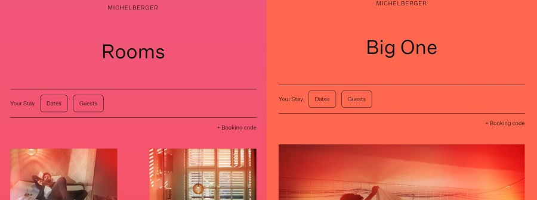
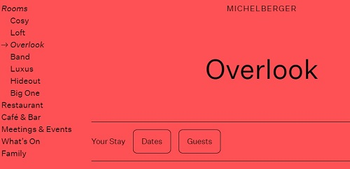
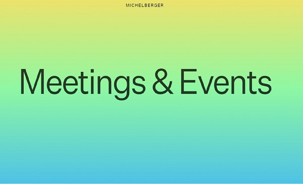
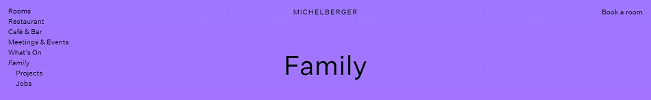

Intro
For this week’s analysis, I will be looking at the website for Michelberger, a hotel located in Berlin, Germany described on its own page as an “independent hotel with character and attitude: creative, unique, and personal.” Their website certainly suggests so for better or worse. The websites main purpose is for booking and basic hotel information, something that gets muddled by certain design choices.
I will start by saying that there are a lot of things I like about this website. There are some truly fascinating elements that I think really make this hotel website stand out from other cookie cutter chains. However, there are certain design elements that could potentially render the site unusable to certain users as well as other issues that could cause confusion or deter someone’s booking experience.
For this usability analysis, I will critique these four design principles: strategic color usage, simple interface, consistent UI, and UX.
Strategic Color Usage
One glaring example of how color can render a site unusable is the splash page. You are greeted by an unsuspecting but once you click on your mouse, all hell breaks loose, and the page cycles through various colors for a few seconds and takes you to the home page. I generally keep the brightness on my screens low but for those who are sensitive to light, this website could be a health hazard.
 Michelberger's splash page: There should be a warning on this page.
Michelberger's splash page: There should be a warning on this page.
Honestly, the easiest and only fix should probably be getting rid of this splash page. On the flip side, the website does well in changing the color of the pages depending on where on the site you are. It’s almost as if the mood of the page changes with the change in color scheme. The contents of the website are basic, with text and images being very minimal, but the simple act of changing color makes it feel like more is going on in a good way.
 Less abrasive than the splash page.Simple Interface
Michelberger runs into an issue where they have two different navigation options. The menu button works well, and sub-menus are shown when appropriate. Users can see where they are in relation to the menu with an arrow pointing this out. In the grand scheme of things, the website is not big so having an expanding menu is not over-bearing on the page.
 Clear hierarchy between pages incorporating "bread crumb" navigation.The other navigation/menu option is to scroll through the home page and click on the title. This ends up being too cumbersome, especially given the fact that once you have committed to a sub-page, you must use the menu described above to navigate through the rest. So why have this form of navigation in the first place if you must default to the superior navigation menu? My fix for this would be giving the user an option to scroll down to the next sub-page or having the menu button being the only form of navigation.
 This way of navigating through the website makes the menu items look like full page Power Point presentation slides.Consistent UI and UX
Expanding further on the interface, the inconsistency between the two navigation methods lead to an even more inconsistent user experience. I would much rather use the menu navigation to get to where I need, whereas scrolling through the home page becomes a chore. The scrolling methods, in my opinion, seems like it was only added to show changes in color gradience between menu items. Where color was a positive (excluding the splash page) before, it is now another detriment to the website.
One thing that is consistent in the interface and the experience is that booking a room is always one click away. There is either a “Book a room” clickable item on the top-right hand side of the page or an option to book dates front and center in the “Rooms” page.
 Note: Booking a room is as simple as clicking the top right of most pages.Conclusions
The booking experience is the best part of this website and the focal point of this business. I would like to see this booking UI at the forefront. It is a clean and usable interface that should really shine but it is deterred by design choices.
There are quite a few instances where it seems like the design of this page was designed for the sake of "design." This is a hotel that is clearly aimed towards eclectic people but even eclectic people need to know how to navigate and book rooms, without the website confusing them or in extreme cases, possibly inducing seizures.